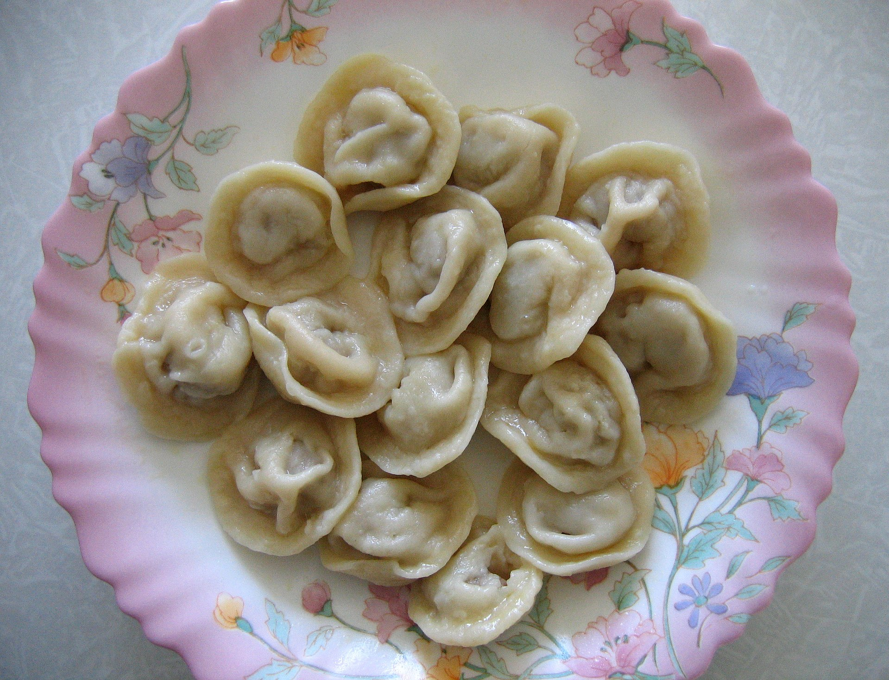

Пельмени
Пельме́ни (ед. ч. пельме́нь) — традиционное блюдо русской кухни в виде термически обработанных изделий из пресного теста с начинкой из рубленого мяса или рыбы, ведущее своё происхождение с Урала и Сибири.
Происхождение и этимология
Русское слово пельмени является заимствованием из пермских языков: коми, удм. пельнянь «хлебное ухо»: пель «ухо» + нянь «хлеб». Форма пельмень образовалась под влиянием севернорусского наречия, через которое слово попало в литературный язык. Уральские диалектные формы пермяни, пермени образовались в результате народно-этимологического сближения со словом Пермь.
Некоторые популярные или устаревшие этимологические словари указывают в качестве источника «финно-угорские языки» в целом, мансийский и финский языки.
В. В. Похлёбкин считал, что пельмени пришли в русскую кухню с Урала в конце XIV — начале XV веков. В русских письменных документах уральских населённых пунктов XVII—XVIII веков (с 1679 года) встречаются фамилии, образованные от слова «пельмени»: Пельменев, Пелненев, Пельменников. Историк П. А. Корчагин на основе анализа упоминаний «пельменных» фамилий в документах отметил, что в верхнем Прикамье в 1579 году ещё не было людей, которые зарабатывали изготовлением пельменей. Наиболее вероятным путем попадания пельменей на Урал является заимствование у традиционной кухни кочевых народов (например, сибирских татар, киргизов) и в ходе переселения финно-угорских народов из Сибири на Урал и в Европу.Пельмени в традиционной культуре не были обрядовым блюдом и готовились по праздникам — при встрече гостей и в заговенье.
Туристическая индустрия Удмуртии пытается закрепить за регионом статус «родины пельменей». С 2015 года в республике проходит праздник «Всемирный день пельменя».
В рамках рекламных компаний и маркетинговых акций крупных производителей готовых пельменей часто употребляется название «Сибирские пельмени» для позиционирования продукции в премиальном ценовом сегменте. При этом для рецепта сибирских пельменей характерно сочетание в качестве начинки смеси фарша из говядины и свинины.
Приготовление
Тесто для пельменей готовится из муки, яиц и воды (реже — молока). Начинка классических пельменей изготавливается из говядины, свинины и/или баранины с добавлением различных специй, лука, иногда чеснока, возможно использование также мяса медведя, оленя, лося, гуся, рыбы, свиного сала, картофеля, капусты. В. Гиляровский в книге «Москва и москвичи» упоминает и редкие фруктовые пельмени.
Пельмени хранятся замороженными и готовятся непосредственно перед употреблением. Их кладут в кипящую воду или мясной, рыбный или овощной бульон и варят до тех пор, пока они не всплывут, а затем ещё 2—5 минут. При варке можно добавить в бульон лавровый лист и репчатый лук.
Пельмени могут подаваться с различными соусами, кетчупом, майонезом, сметаной, сливочным маслом, горчицей, уксусом, перцем. Иногда пельмени поджаривают после приготовления до появления золотистой корочки, либо жарят сырые пельмени до готовности. Можно также подавать пельмени вместе с бульоном, в котором они готовились, в виде первого блюда. Практикуется также приготовление пельменей в керамической посуде в духовом шкафу, или на пару (в зависимости от размеров 15-25 минут).
C чего начать?
Для начала необходимо собрать ингридиенты:
-
Тесто:
- Мука
- Вода
- Соль
-
Начинка:
- Фарш из свинины
- Фарш из говядины
- Соль
- Молотый черный перец
